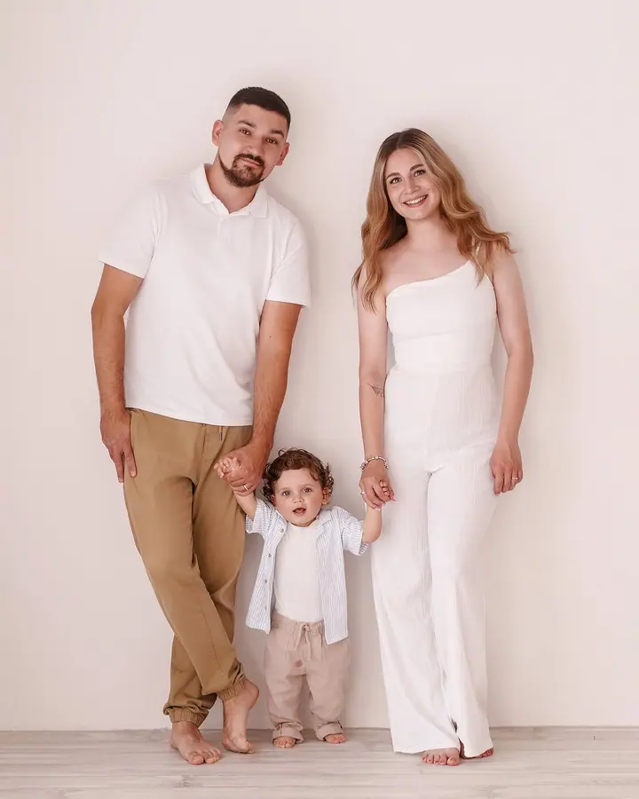
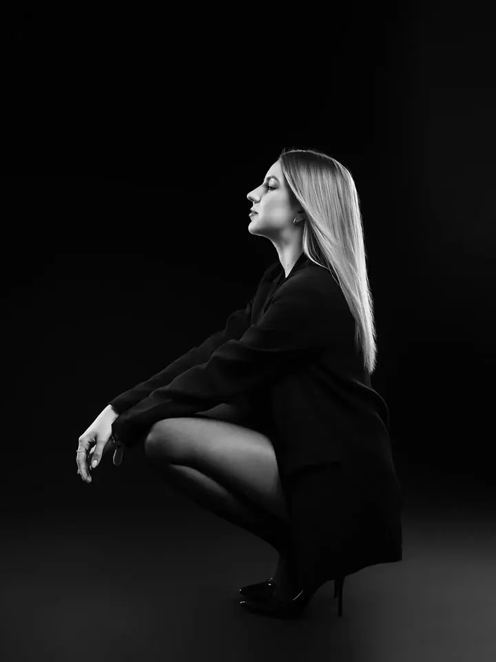
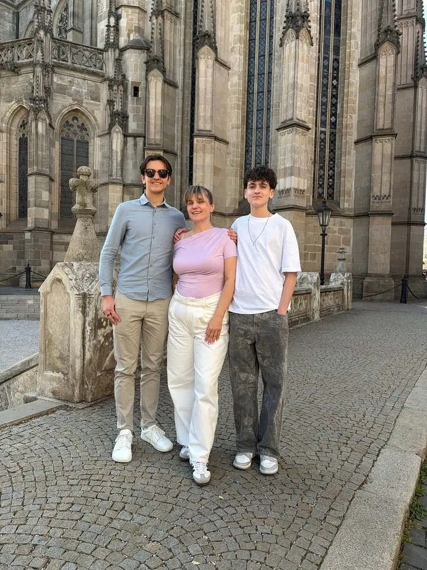
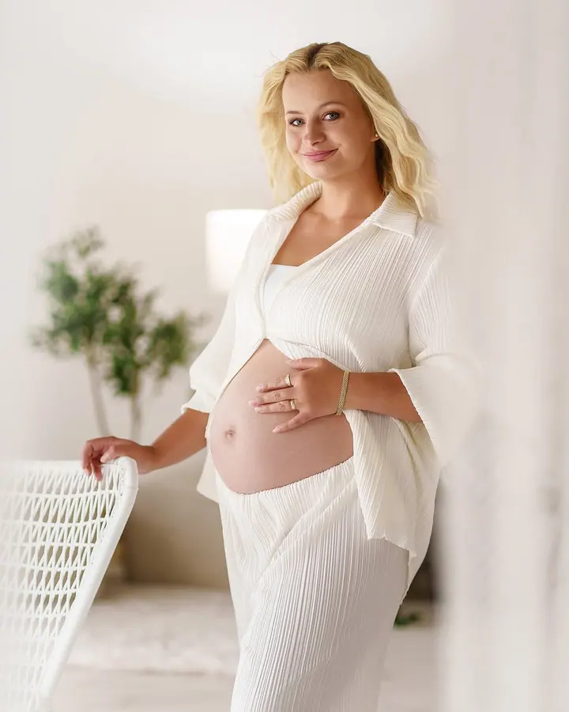

Rodina a děti
Fotím děti i dospělé, celé rodiny i sourozence. V ateliéru, nebo venku v exteriéru.




Jmenuji se Aneta Barčová a jako profesionální fotografka fotím od roku 2008. Fotím rodiny a děti, těhotenské fotky a biznis portréty, nejčastěji ve svém vlastním ateliéru v Košicích.
Více o mně„Nemusíte umět pózovat, všechno vám ukážu.“
— Aneta Barčová
Fotím děti i dospělé, celé rodiny i sourozence. V ateliéru, nebo venku v exteriéru.
Jemné fotky bříška v čistém světlém ateliéru. Na pózování nemusíte nic umět, všechno vám ukážu.
Biznis portréty pro web, sociální sítě i prezentace. Pro firmy fotím také prostory a produkty.
Ženský portrét v ateliéru, barevný i černobílý. Focení, na kterém se můžete cítit jako na hodině pilates, ale výsledek bude stát za to.
Jmenuji se Aneta Barčová a fotím profesionálně od roku 2008. Věnuji se portrétní a rodinné fotografii a focení pro firmy. Fotím děti i dospělé, těhotenské fotky, beauty ženské portréty i biznis portréty.
Mám vlastní fotoateliér v Košicích, takže se nemusíte ohlížet na počasí. Když je venku hezky, rádi vyrazíme i ven, třeba mezi rozkvetlé sakury. Pro firmy fotím také interiéry a produkty.
Nemusíte vědět, jak pózovat, navigovat vás je moje práce. Během focení všechno ukazuji a vysvětluji. Možná si budete připadat trochu jako na hodině pilates, ale výsledek bude stát za to. A ještě vám i zatančím.
Napište mi nebo zavolejte, co si představujete. Společně vybereme typ focení a termín.
Poradím vám, co si vzít na sebe a jestli budeme fotit v ateliéru, nebo venku.
Na pózování nemusíte nic umět. Všechno vám ukážu a vysvětlím, ať se před objektivem cítíte dobře.
Fotky pečlivě vyberu a upravím a pošlu vám je v dohodnutém termínu.
Vůbec ne. Navigovat vás je moje práce, během focení všechno ukazuji a vysvětluji.
Většinou ve svém fotoateliéru v Košicích. Rodinné a dětské focení dělám i venku v exteriéru.
Ano. Kromě biznis portrétů fotím pro firmy také prostory a produkty.
Ano, vánoční fotky patří k mému portfoliu. Termíny na sezónu je dobré domluvit s předstihem.
info@anetabarcova.sk
Košice